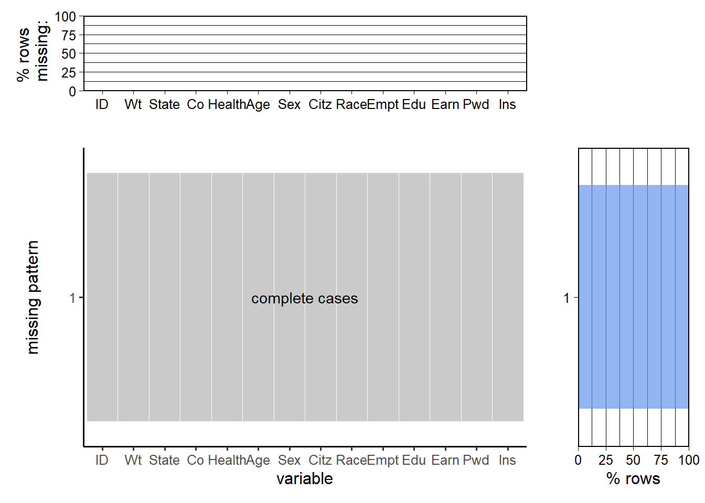
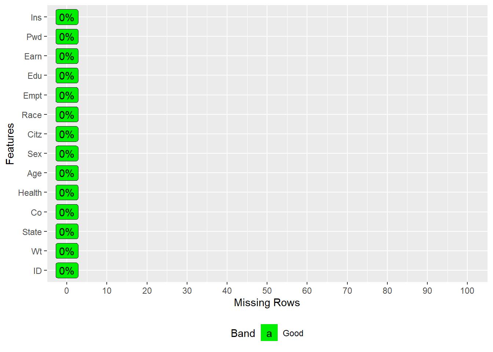

To analyze health status of people living in the United States and its relations with other social, cultural and economic dimensions we use the Annual Social and Economic Supplement to the Current Population Survey (CPS-ASEC from now on). This data is collected annually -mainly during March- by the U.S. Census Bureau and includes information of more than 75,000 households. It is worth noting that the dataset contains information for every member of each of the participating households.
The data is available on the U.S. Census Bureau’s official website in both SAS and CSV format. As it is documentated in the official Data Dictionary, the variables may refer to three different record types: Household, Family or Person. For this project, we work with a subset of the ‘Person Type’ variables. Furthermore, as we also want to use georeferencing data, we incorporate the two ‘Household Type’ variables that point the state and county of every observation.
There is an available package in R called ‘cpsR’ see documentation here to import the data. Particularly, there is a function called ‘get_asec’ to load the data. However, to get the data, we first needed to request a key for the Census API through this official website. We’ll work with the most updated information so far: the 2023 CPS-ASEC dataset.
The 2023 CPS-ASEC dataset contains information of 146,133 individuals. Each row refers to a unique individual, identified with the variable ‘PERIDNUM’ (22-digit Unique Person identifier). Since the database is a sample, and logically does not cover the entire population, there is a variable ‘A_FNLWGT’ that contains the weight associated with each observation. It is important to take this variable into account so that the statistics and graphs are a fair representation of the overall US population.
There are in total 829 ‘Person Type’ variables in the dataset that cover a huge number of characteristics. For this project, since we are interested in health status and how it relates to specific social, cultural, and economic dimensions we have selected a subset of 10 ‘Person Type’ variables -additionally to the identifier and weight columns-.
Our main variable is ‘HEA’ that refers to the health status of the person. This is a categorical variable that takes five possible values: 1 (that accounts for ‘Excellent’), 2 (‘Very good’), 3 (‘Good’), 4 (‘Fair’) or 5 (‘Poor’). We have also chosen two additional variables related to health: ‘DIS_HP’ and ‘NOW_COV’: the former indicates if the person has a health problem or a disability that prevents them from working and the latter indicates if the interviewed is currently covered by health insurance coverage. It is worth noting that ‘dis_hp’ is only available for persons aged at least 15. In addition to these 3 variables related to health, we will also work with 7 other dimensions to better understand how health relates with other metrics. These additional variables are ‘A_AGE’ (that refers to the age of the person), ‘A_SEX’ (sex), ‘PRDTRACE’ (race), ‘PEMLR’ (employment status), ‘A_HGA’ (educational attainment), ‘PRCITSHP’ (citizenship) and ‘PEARNVAL’ (earnings). Finally, as we have mentioned, we include two ‘Household Type’ variables: ‘GESTFIPS’ and ‘GTCO’ that refer respectively to the state and county in which each person is located. Regarding this point, one issue with the data is that it only covers a subset of about 1300 of the 3100 counties in the United States.
2.2 Research Plan
The main focus of the project is to understand the current health status of the US population. To assess it, we will analyze the variable ‘HEA’ from the Annual Social and Economic Supplement to the Current Population Survey that indicates the perception of the self state of health of each interviewed individual. It is worth noting that it is not an objective metric, but rather a subjective one. We will be considering this variable as a proxy of their actual state of health.
In addition, we are interested not only in health status, but also in its relation to other dimensions. For instance, as we pointed out in the Introduction, we wonder whether richer people are healthier -or not- than poorer ones. To understand this relationship, we will study how variables ‘HEA’ (health status) and ‘PEARNVAL’ (earnings) interact with each other. Although we will not analyze cause-effect relationships, we will study if these two dimensions are positively or negatively correlated - or maybe they are not related at all-. From an economic point of view, we should expect a positive relationship since, for example, higher earnings translate into a greater purchasing power to purchase better insurance coverage. However, there may be other factors that mediate this relation. Besides, as ‘HEA’ is a subjective measure, it could be the case that wealthier people compare their health status to the one of other wealthy people (rather than to the average population) and therefore we may not find a positive relation between economic status and health. To better understand this connection, we will also use the variables ‘DIS_HP’ and ‘NOW_COV’ that measure, respectively, if the person has a disability which prevents work, and if the person has currently health insurance coverage.
In a similar way, we are concerning about how employment status relates with health. It is reasonable to believe that employed people enjoy better general health. Indeed, we expect them to have more money and therefore spend more money on health treatments. Nevertheless, it could also be possible that employed people felt more stressed during the day of the interview, and their responses could underestimate their actual health status. We will deepen on this relationship analyzing the variables ‘HEA’ (health status) and ‘PEMLR’ (employment status).
Another research question is how the health of native-born or naturalized US citizens relates to that of non-US citizens that live in the US, and how this relation changes with age. To answer this question we will analyze the joint relationship between the variables ‘HEA’ (health status), ‘PRCITSHP’ (citizenship) and ‘A_AGE’ (age). This relationship can take different directions. For instance, it could be the case that nowadays there is no difference in health for young people between US citizens and non-US citizens. However, it is possible that some decades ago, there was a significant difference in health in terms of citizenship status -perhaps due to some health-related legislation- that persists for people who are older today. To answer this type of questions we need to analyze the three different dimensions at the same time -for example, using an adequate mosaic plot-.
We will also use georeferencing data of each person’s location to assess whether there are differences in health across states and counties in the United States. In particular, we will utilize the variables ‘GESTFIPS’ and ‘GTCO’ that indicate respectively the state and county of each observation. Finally, for all the previous analyses to be correct, we will weigh each observation with its respective weight indicated in the variable ‘A_FNLWGT’.
Warning: package 'cpsR' was built under R version 4.3.2
Code
library(tidyverse)
Warning: package 'forcats' was built under R version 4.3.2
── Attaching core tidyverse packages ──────────────────────── tidyverse 2.0.0 ──
✔ dplyr 1.1.3 ✔ readr 2.1.4
✔ forcats 1.0.0 ✔ stringr 1.5.0
✔ ggplot2 3.4.3 ✔ tibble 3.2.1
✔ lubridate 1.9.2 ✔ tidyr 1.3.0
✔ purrr 1.0.2
── Conflicts ────────────────────────────────────────── tidyverse_conflicts() ──
✖ dplyr::filter() masks stats::filter()
✖ dplyr::lag() masks stats::lag()
ℹ Use the conflicted package (<http://conflicted.r-lib.org/>) to force all conflicts to become errors
Code
library(ggplot2)library(DataExplorer)
Warning: package 'DataExplorer' was built under R version 4.3.2
Code
library(ggplot2)library(data.table)
Attaching package: 'data.table'
The following objects are masked from 'package:lubridate':
hour, isoweek, mday, minute, month, quarter, second, wday, week,
yday, year
The following objects are masked from 'package:dplyr':
between, first, last
The following object is masked from 'package:purrr':
transpose
Then, we import the selected features from the 2023 CPS-ASEC dataset using the function ‘get_asec’ from the package ‘cpsR’:
Since there are certain features whose categories are too detailed for our purposes, we make the following preprocessing:
Code
### Sex ###df$Sex <-factor(df$Sex, levels =c(1, 2), labels =c("Male", "Female"))### Citizenship ###df$Citz <-factor(df$Citz, levels =c(1, 2, 3, 4, 5), labels =c("Native", "Native", "Native", "Naturalized", "Not US Citizen"))# We group:# categories 1 (Native, born in the US), 2 (Native, born in PR or US outlying are) and 3 (Native, born abroad of US parent(s)) into "Native". #table(df$Citz)### Employment ###df$Empt <-factor(df$Empt, levels =c(0, 1, 2, 3, 4, 5, 6, 7), labels =c("NIU","Employed", "Employed", "Unemployed", "Unemployed", "Retired", "Disabled", "Other"))# We group: # categories 1 (Employed - at work) and 2 (Employed - absent) into "Employed"# categories 3 (Unemployed - on layoff) and 4 (Unemployed - looking) into "Unemployed". #table(df$Empt)### Education ####table(df$Edu)df$Edu <-ifelse(df$Edu >=31& df$Edu <=38, 30, df$Edu)# We group categories 31 to 38 into 30 (than we'll label it as "High school Incomplete")df$Edu <-factor(df$Edu, levels =c(0, 30, 39, 40, 41, 42, 43, 44, 45, 46), labels =c("Children","High school Incomplete", "High School Complete", "College Incomplete", "Associate", "Associate", "Bachelor", "Master", "Professional Degree", "PHD"))# We group categories 41 and 42 into "Associate"#table(df$Edu)### Race ####table(df$Race)df$Race <-ifelse(df$Race >=6, 6, df$Race)df$Race <-factor(df$Race, levels =c(1, 2, 3, 4, 5, 6), labels =c("White","Black", "American Indian", "Asian", "Pacific Islander", "Mixed"))#table(df$Race)### Disabled ###df$Pwd <-factor(df$Pwd, levels =c(0, 1, 2), labels =c("NIU", "Yes", "No"))#table(df$Pwd)### Health Status ###df$Health <-factor(df$Health, levels =c(1, 2, 3, 4, 5), labels =c("Excellent", "Very good", "Good", "Fair", "Poor"))#table(df$Health)### Insurance Coverage ###df$Ins <-factor(df$Ins, levels =c(1, 2), labels =c("Yes", "No"))
For instance, we have grouped the categories 1 (Employed - at work) and 2 (Employed - absent) into “Employed” on the feature that indicates the employment status.
To see the column types:
Code
data.frame(sapply(df,class))
sapply.df..class.
ID numeric
Wt numeric
State integer
Co integer
Health factor
Age integer
Sex factor
Citz factor
Race factor
Empt factor
Edu factor
Earn integer
Pwd factor
Ins factor
Finally, we update the theme of ggplot to center the titles by default:
Fortunately, there are no missing values for the subset of dimensions of the CPS-ASEC that we will work with.
Indeed, we can look at this through the following graph:
Code
redav::plot_missing(df, percent=TRUE)
Scale for y is already present.
Adding another scale for y, which will replace the existing scale.
Scale for y is already present.
Adding another scale for y, which will replace the existing scale.

We have used the ‘plot_missing’ function from the ‘redav’ Package. We can see that there are no missing values on any dimension. Indeed, the only row pattern that exists in the dataset is the one that corresponds to ‘no missing values’, which is named ‘complete cases’. It is worth noting that the Census Bureau preprocesses the data and imputes missing values, before releasing the dataset. (More information about CPS ASEC preprocessing)
Warning: `aes_string()` was deprecated in ggplot2 3.0.0.
ℹ Please use tidy evaluation idioms with `aes()`.
ℹ See also `vignette("ggplot2-in-packages")` for more information.

To create this graph we have used this adaptation from the ‘plot_missing’ function from the ‘DataExplorer’ package. Also, we have added a line of code inside the function to force the y-axis to start at 0. The graph indicates the share of rows with missing values for each of the 14 variables. It follows from the graph that there are no missing values in any of the dimensions. .
This characteristic of the dataset could also have been discovered through the following code:
Code
colSums(is.na(df)) %>%sort (decreasing =TRUE)
ID Wt State Co Health Age Sex Citz Race Empt Edu
0 0 0 0 0 0 0 0 0 0 0
Earn Pwd Ins
0 0 0
Although there are no missing values, there are some questions that -by construction- are not asked to certain groups of people. In fact, as it can be checked on the official Data Dictionary, the dimensions ‘PEARNVAL’ and ‘DIS_HP’ are only available for people aged at least 15. It makes sense because ‘PEARNVAL’ refers to the earnings derived from wage or salary, or for self-employment income and ‘DIS_HP’ indicates whether or not the respondent has a disability that prevents them from working. Indeed, it can be checked that, for instance, the number of people with ‘DIS_HP’ == “NIU” that stands for “Not in Universe” equals the number of respondents up to 14 years old.